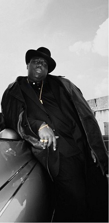
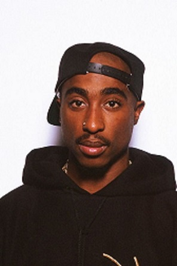
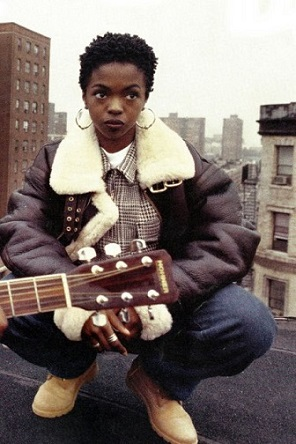
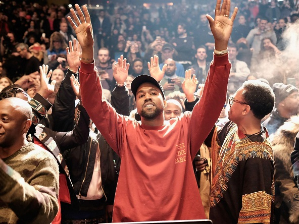
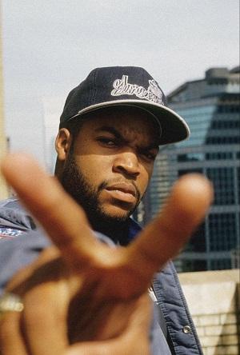
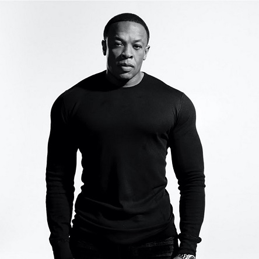
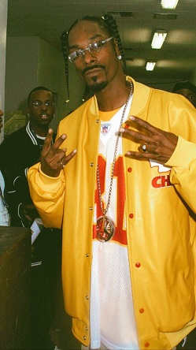
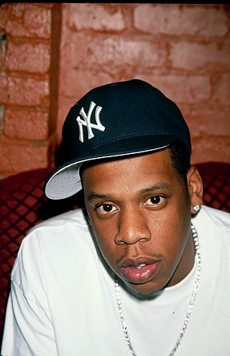
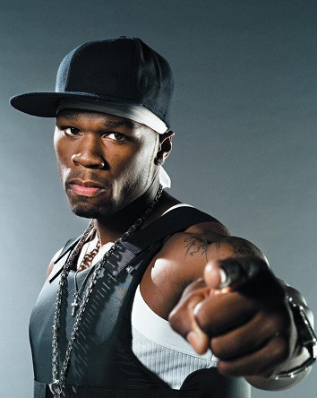
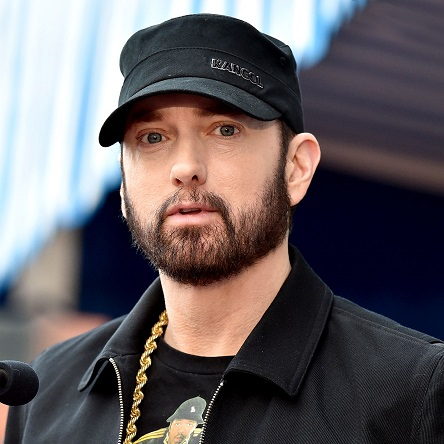

1° Notorious B.I.G.
Christopher George Latore Wallace (Nova Iorque, 21 de maio de 1972 — Los Angeles, 9 de março de 1997), mais conhecido por seus nomes artísticos The Notorious B.I.G., Biggie Smalls, ou simplesmente Biggie, foi um rapper e compositor norte-americano. Enraizado na cena do rap de Nova Iorque e nas tradições do gangsta rap, ele é considerado um dos maiores rappers de todos os tempos. Wallace foi notado pelo seu "flow solto e descontraído", que sobrepõe, muitas vezes, o conteúdo sombrio de suas letras. Suas músicas eram frequentemente semi-autobiográficas, falando das dificuldades de sua vida e da criminalidade, mas também de devassidão e celebração.
Nascido e criado no Brooklyn, na cidade de Nova Iorque, Wallace assinou seu primeiro contrato em 1993 com a gravadora Bad Boy Records, gravadora fundada neste mesmo ano por Sean Combs. Seu álbum de estreia, Ready to Die (1994), foi aclamado pela crítica e inclui suas canções de maior sucesso, "Juicy" e "Big Poppa". O álbum fez dele a figura central na cena do hip hop na Costa Leste, e restaurou a visibilidade de Nova Iorque no gênero, numa época em que a Costa Oeste era dominante. Wallace foi premiado como Rapper do ano pela Billboard Music Awards em 1995. No ano seguinte, Biggie foi o mentor por trás do grupo Junior M.A.F.I.A., levando seus amigos de infância a traçar o sucesso, entre eles Lil' Kim e Lil' Cease.
Durante a gravação de seu segundo álbum, Wallace foi fortemente envolvido na crescente rixa de hip hop East Coast–West Coast. Uma série de suspeitas foram levantadas após Tupac Shakur ser atingido e morto por tiros disparados de um veículo em movimento em Las Vegas em Setembro de 1996. Especulações cercaram a Bad Boy e muitos acreditaram que seu envolvimento era claro, por conta da rixa entre Biggie e Tupac.
Em 9 de Março de 1997, Wallace foi morto a tiros da mesma forma que Tupac, sendo atingido por tiros vindo de um carro, enquanto visitava Los Angeles. Seu álbum duplo Life After Death, lançado 16 dias depois, subiu para No. 1 nas paradas de álbuns dos EUA e recebeu um disco de Diamante em 2000 pela Recording Industry Association of America, um dos poucos álbuns de hip hop a receber essa premiação. Mais dois álbuns foram lançados desde a sua morte. Ele tem certificado de vendas de 17 milhões de unidades nos Estados Unidos, incluindo 13,4 milhões de álbuns vendidos.
2° Tupac Shakur
Tupac Amaru Shakur (nascido Lesane Parish Crooks, Nova Iorque, 16 de junho de 1971 — Las Vegas, 13 de setembro de 1996), mais conhecido pelos seus nomes artísticos 2Pac, Makaveli ou apenas Pac, foi um rapper, ator e compositor estadunidense, considerado por muitos como um dos melhores e mais importantes rappers de todos os tempos. Em 2010, ele já havia vendido pelo menos 75 milhões de cópias pelo mundo. Além de ser músico, Tupac também foi ator e ativista social. A maioria das suas canções tratam sobre como crescer no meio da violência e da miséria nos guetos, o racismo, os problemas da sociedade e os conflitos com os outros rappers. Antes de entrar para a carreira artística, ele era um roadie e dançarino de hip hop alternativo. Começou a fazer sucesso quando entrou para o grupo Digital Underground.
Shakur tornou-se alvo de diversas ações judiciais e teve outros problemas legais. No início de sua carreira, ele foi atingido por cinco tiros e assaltado no corredor de um estúdio de gravação em Nova Iorque. Após o incidente, Tupac começou a suspeitar que outras figuras da indústria do rap ficaram sabendo do acontecido e não avisaram Shakur, o que desencadeou a rivalidade entre as costas Leste e Oeste. Mais tarde, Shakur acabou por ser condenado por abuso sexual e ficou preso durante onze meses, tendo sido libertado da prisão num recurso financiado por Suge Knight, diretor executivo da Death Row Records. Em troca da ajuda de Suge, Tupac teve de gravar três álbuns sob o selo Death Row.
Em 7 de abril de 2017, Tupac Shakur foi incluído no Hall da Fama do Rock and Roll, se tornando o primeiro rapper solo a realizar tal feito e fazer parte dos então únicos artistas de Hip-Hop no Hall da Fama do Rock and Roll, junto com o N.W.A, Public Enemy, Run D.M.C. e Grandmaster Flash and the Furious Five.
Na noite de 7 de setembro de 1996, Tupac, dentro do carro de Suge, foi atingido por quatro tiros num tiroteio, na cidade de Las Vegas. Ele faleceu seis dias depois, vítima de insuficiência respiratória e parada cardíaca, na Universidade Médica de Nevada. Após a sua morte, o jornal americano The New York Times citou-o como "o maior rapper de todos os tempos".
3° Lauryn Hill
Lauryn Hill nasceu no dia 26 de Maio de 1975 em East Orange, Nova Jérsei. Lauryn tem um irmão mais velho chamado Malaney, nascido em 1972. Sua família é evangélica, frequentando a denominação batista. Antes de nascer, seus pais moraram nas cidades de Nova Iorque e Newark , até se estabelecerem em East Orange, Nova Jérsei. Sua família sempre foi influenciada pela música: Sua mãe tocava piano, e seu pai cantava em festas de aniversário e de casamento.
Lauryn cresceu ouvindo grandes músicos como: Curtis Mayfield, Stevie Wonder, Aretha Franklin, e Gladys Knight. Durante a infância e a adolescência, Lauren participava das aulas de violino, teatro e do coral de música gospel de sua escola, tornando-se também líder de torcida. Foi vaiada em sua primeira apresentação aos 10 anos, e pensou em desistir da música, mas foi incentivada por sua mãe a continuar. A partir daí começou a focar sua carreira para o lado atriz, além de cantora, participando no teatro de peças musicais. Com o tempo acabou sendo aprovada em testes na TV, passando a cantar e fazer pequenas participações em programas de televisão e filmes
Lauryn apareceu como destaque interpretando Rita Watson na segunda parte do filme Sister Act (com Whoopi Goldberg) e fez parte do trio musical The Fugees com Wyclef Jean e Pras Michel. O The Fugees acabou devido às constantes brigas internas entre os integrantes. A música mais conhecida deles é Killing Me Softly uma regravação de um sucesso na década de 70 de Roberta Flack.
Seu primeiro disco solo, The Miseducation of Lauryn Hill (1998), reinou nas paradas americanas durante quase todo o ano de seu lançamento. Além disso, garantiu a Hill onze indicações no prêmio Grammy de 1999, feito jamais alcançado por uma cantora. Hill levou cinco, entre eles o de Álbum do Ano e Melhor Cantora do Ano. O disco, uma mistura de rap, soul, reggae e rhythm & blues, também rendeu uma turnê ao lado dos rappers de Outkast. Em 27 de julho de 1998 lançou seu primeiro single intitulado; ''Doo Wop (That Thing)'' sendo escrita e produzida pela própria artista. O vídeo musical da faixa recebeu o primeiro prêmio na categoria Video of the Year na cerimónia MTV Video Music Awards de 99.
O álbum MTV Unplugged é autobiográfico e fala de suas decepções pessoais, tanto com a gravadora, e seu lado espiritual. O mais intrigante neste novo álbum ela se recusa a cantar musicas de seu álbum anterior, todas as faixas são emocionantes, ele revela muito segredos sobre o mundo da musica.
4° Kanye West
Ye, mais conhecido como Kanye West, é um rapper, compositor, produtor musical, diretor de arte e estilista americano, nativo de Atlanta, Geórgia. Ye ficou famoso no início de sua carreira como produtor da Roc-A-Fella Records, onde ganhou reconhecimento pelo seu trabalho no álbum The Blueprint, de Jay-Z, assim como por hits para outros cantores como Alicia Keys, Ludacris, Janet Jackson e outros. Atualmente, como cantor, Ye é o 9º artista que mais vendeu músicas em formato digital, além de ter ganhado vários prêmios, incluindo um total de 22 Grammys, sendo assim o maior rapper da história da premiação. Seu estilo de produção originalmente consistia de samples vocais agudos de músicas soul incorporados à sua própria percussão e instrumentos. Contudo, em produções subsequentes, ele aumentou sua paleta musical e expressou influências que abarcam R&B dos anos 70, baroque pop, trip hop, arena rock, folk, música alternativa, música eletrônica, synthpop e música clássica.
Ye lançou o seu álbum de estreia The College Dropout em 2004, seu segundo álbum Late Registration em 2005, seu terceiro álbum Graduation em 2007, o quarto álbum 808s & Heartbreak em 2008, o quinto álbum My Beautiful Dark Twisted Fantasy em 2010, o sexto álbum Yeezus em 2013, o sétimo álbum The Life of Pablo em 2016, seu oitavo álbum Ye em 2018, o seu nono álbum Jesus is King em 2019, o seu décimo álbum Donda em 2021 e o seu décimo primeiro álbum Donda 2 em 2022. Lançou também os álbuns colaborativos Watch The Throne, com Jay-Z em 2011, e Kids See Ghosts com Kid Cudi em 2018. Muitos de seus trabalhos receberam críticas positivas, ganhando vários prêmios, incluindo um total de 22 Grammys. Todos seus álbuns obtiveram bastante sucesso comercial, com 808s & Heartbreak se tornando seu terceiro álbum número um consecutivo, aquando da estreia, nos Estados Unidos. Ye também é dono da G.O.O.D. Music, seu selo de gravação próprio, que possui contratos com artistas como John Legend, Big Sean, Pusha T e Teyana Taylor. O mascote e marca registrada de Ye é o "Dropout Bear", um urso de pelúcia que aparece na capa de três de seus dez discos solos, assim como em várias capas de singles e videoclipes.
5° Ice Cube
O'Shea Jackson Sr. (Los Angeles, 15 de junho de 1969), mais conhecido pelo seu nome artístico Ice Cube, é um rapper, produtor musical, ator, escritor, comediante, produtor cinematográfico e diretor norte-americano. Ele iniciou sua carreira em 1984 como membro do grupo C.I.A. e depois entrou para o grupo de gangsta rap N.W.A em 1986. Após ter deixado o N.W.A em dezembro de 1989, ele construiu uma carreira solo bem sucedida na música, e também como escritor, diretor, ator e produtor no cinema. Adicionalmente, ele tem servido como um dos produtores da série de televisão da Showtime Barbershop e da série da TBS Are We There Yet?, ambas sendo baseadas em filmes onde ele atuou como o personagem principal.
Ele foi classificado número 9 na lista dos 10 Maiores MCs de Todos os Tempos da MTV, enquanto o próprio Snoop Dogg o elegeu o maior MC de todos os tempos. About.com o classificou o número 11 na sua lista dos "50 Melhores MC's do Nosso Tempo". Allmusic o chamou de um dos melhores e mais controversos artistas do hip-hop, assim como "um dos melhores contadores de histórias do rap." Em 2012, a revista The Source o classificou número 14 na sua lista dos 50 Melhores Letristas de Todos os Tempos.
6°Dr.Dre
Começou sua carreira na música como DJ em um clube de Los Angeles chamado Eve After Dark. Também tocavam neste mesmo clube os DJ's Yella e Unknown. O responsável por esse clube, conhecido como Lonzo, contratou Dr. Dre e Yella, juntamente com Cli-N-Tel (um amigo do colégio de Andre) para formar o grupo World Class Wreckin' Cru. A produção acontecia nos fundos do clube, onde havia um mini-estúdio de 4 canais onde foram gravadas as primeiras músicas do grupo. Eles entraram no top 40 R&B de sucessos com o single Turn Down Of The What.
Logo, o World Class Wreckin Cru deixou de ser uma prioridade para Dr. Dre e Yella quando eles formaram, afiliado ao selo de gravadora Ruthless Records fundado por Eazy E com dinheiro obtido pela venda de drogas, o grupo N.W.A (abreviação de Niggaz With Attitudes que significa Negros Com Atitude cujos membros eram Dr. Dre, DJ Yella, MC Ren, Ice Cube e o próprio Eazy E). Suas músicas viraram hinos das ruas (embora grupo não tenha tido apoio da mídia nem da MTV) e seus membros viraram os mais notórios representantes do que viria a ser batizado de gangsta rap, um estilo de hip-hop com letras violentas e hedonismo. Seus protagonistas justificavam o estilo chocante das músicas dizendo que eles apenas estavam "contando como a coisa é na realidade". O Grupo N.W.A lançou 3 álbuns (nessa ordem): N.W.A. and the Posse, Straight Outta Compton e Niggaz4Life, todos produzidos por Dr. Dre e DJ Yella. Durante seu tempo na Ruthless, Dr. Dre também produziu o álbum do grupo "Above The Law" e do rapper The D.O.C.
Dentro do N.W.A. houve desentendimentos entre os membros. Ice Cube havia deixado o grupo após o segundo álbum e o Dr. Dre após o 3o em 1991 - foi o fim do N.W.A.
Após isso, Dr. Dre fundou, juntamente com Marion Suge Knight, ou Suge Knight, o selo de gravadora Death Row Records e o primeiro CD lançado por ela foi do próprio Dre, chamado The Chronic. Os singles desse CD foram "Fuck Wit Dre Day", "Let Me Ride", "Nuttin' But A ‘G’ Thang" (esse, em destaque, já foi eleito o melhor single da década de 90 e é considerado o melhor single de rap de todos os tempos) e "Lil’ Ghetto Boy". Depois, Dr. Dre também produziu o álbum de Snoop Dogg chamado Doggystyle, mixou o álbum do Tha Dogg Pound e contribuiu com algumas faixas para outros artistas, inclusive o viciante single de Tupac chamado California Love (junto de Roger Troutman). A MTV nomeou The Chronic um dos mais icônicos álbuns de hip hop de todos os tempos.
7° Snoop Dog
Calvin Cordozar Broadus, Jr. (Long Beach, 20 de outubro de 1971), conhecido pelos nomes artísticos Snoop Doggy Dogg, Snoop Dogg, Snoop Lion e Snoopzilla é um rapper, cantor, compositor, produtor musical e ator norte-americano . Em toda sua carreira Snoop já vendeu mais de 60 milhões de discos pelo mundo, tendo sua carreira iniciada em 1990, quando foi descoberto pelo rapper Dr. Dre, e colaborou com ele no single "Deep Cover", e em quase todas as faixas do álbum de estreia de Dre, The Chronic
Após suas últimas colaborações com Dre, Snoop ganhou status superstar do Hip Hop estadunidense. O álbum de estreia do artista, intitulado Doggystyle foi lançado em 1993 pela editora discográfica Death Row Records. O álbum foi um sucesso absoluto no Estados Unidos, com vendas de quase um milhão de copias na semana de estreia. O disco reinou na primeira posição da Billboard 200 por três semanas não consecutivas, e por cinco semanas na Billboard R&B/Hip-Hop Albums, sendo ainda em 1994 certificado quatro vezes platina pela Recording Industry Association of America. Desse álbum foram extraídos os singles "Who Am I (What's My Name)?" e "Gin & Juice", dentre outras músicas de sucesso comercial. Em 1994 quando ainda era membro da Death Row Snoop Dogg lançou o curta-metragem Murder Was the Case, que teve a banda sonora homônima ao filme, o LP vendeu 329,000 copias na primeira semana, assim como seu álbum anterior liderou as paradas de álbuns da Billboard, e vendeu mais de dois milhões de copias, sendo então certificado duas vezes platina pela RIAA.
Snoop lançou seu segundo álbum de estúdio, intitulado Tha Doggfather, em 1996, sendo seu primeiro disco a não ter a produção de Dr. Dre. O álbum estreou no topo das paradas de álbuns da Billboard com 479,000 exemplares vendidos na primeira semana. Assim como a trilha sonoro anterior o disco foi certificado platina dupla no Estados Unidos. Diferentemente dos seus álbuns anteriores, seu segundo álbum de estúdio abrangeu mais o mercado europeu, tendo como single de maior repercussão a faixa "Snoop's Upside Ya Head". Tha Doggfather foi o último álbum do rapper como artista da Death Row Records.
Apos sua saída da Death Row, Snoop Dogg assinou contrato com a No Limit Records, gravadora na qual o cantor lançou seu três álbuns de estúdio seguintes, Da Game Is to Be Sold, Not to Be Told de 1998, número um na Billboard e certificado platina dupla, No Limit Top Dogg de 1999 e Tha Last Meal 2000, esses dois últimos alcançaram a primeira posição apenas na R&B/Hip-Hop Albums.
8° Jay-Z
Shawn Corey Carter nasceu em um projeto habitacional de Bedford-Stuyvesant, bairro central do Brooklyn, Nova Iorque. Ele foi abandonado pelo seu pai e, aos doze anos, atirou no ombro do seu irmão para pegar as joias dele. Jay-Z estudou na Eli Whitney High School no Brooklyn, juntamente com o também rapper AZ, até ela ser fechada. Após isso, ingressou na George Westinghouse Career and Technical Education High School no Downtown Brooklyn, onde também estudavam The Notorious B.I.G. e Busta Rhymes, e na Trenton Central High School, mas não se formou. Em suas músicas, ele refere que na adolescência se envolveu com a venda de crack.
De acordo com a sua mãe, Gloria Carter, Jay-Z acordava seus irmãos à noite com barulhos de tambores e instrumentos de cozinha. Eventualmente, ela lhe comprou um boombox para seu aniversário, o que provocou seu interesse na música. Ele começou fazendo freestyles, escrevendo canções, seguindo as músicas de artistas populares da época. Em sua vizinhança, Shawn era conhecido como "Jazzy", um apelido que acabou evoluindo e tornando-se "Jay-Z". O nome artístico também é uma homenagem ao seu mentor musical, Jaz-O, bem como para as linhas de trem J/Z da Avenida Marcy no Brooklyn.
Jay-Z participou de diversas gravações junto com Jaz-O no final da década de 1980 e início da década de 1990, incluindo "The Originators" e "Hawaiian Sophie". Ele também ganhou diversas batalhas de rap com LL Cool J neste período para disputar o contrato com uma gravadora. Jay-Z se tornou conhecido por um grande público pela sua participação especial em "Show and Prove", canção de Big Daddy Kane. Kane se referiu neste período a Jay-Z como um "hype man", conforme sua afirmação: "As suas aparições basicamente são no palco. Se algum dia eu sair do palco para ir trocar de roupas, gostaria de trazer Jay-Z e Positive K, e deixá-los fazendo um freestyle até a hora em que eu voltar." Fez uma participação na popular canção "Da Graveyard" de Big L, e gravou em 1994 seu primeiro single, "I Can't Get With That", o qual foi acompanhado de um videoclipe.
Como um empreendedor e investidor, Jay-Z é co-proprietário da cadeia de bares esportivos 40/40 Club, co-criador da linha de roupas Rocawear. Ele é ex-CEO da Def Jam Recordings, um dos fundadores da Roc-A-Fella Records e da Roc Nation. Ele também fundou a Roc Nation Sports, empresa de agenciamento de atletas da NBA e MLB. Como artista, ele detém o recorde do maior número de álbuns por um artista solo na Billboard 200, com 13 álbuns. Ele também possuiu quatro singles número um na Billboard Hot 100, sendo um deles como artista principal ("Empire State of Mind"). Em 11 de dezembro de 2009, Jay-Z foi classificado como o décimo artista mais bem sucedido da década de 2000 pela Billboard, sendo o quarto rapper da lista, atrás de Eminem, Nelly e 50 Cent.
Juntamente com o seu sucesso musical e financeiro, Jay-Z também é conhecido por ter rivalidades com outros artistas de rap, mais notadamente a famosa briga com Nas, que acabou sendo resolvida em 2005. Ele se casou com a cantora de POP/R&B Beyoncé Knowles em 4 de abril de 2008 em uma cerimônia fechada. O casal tem uma filha, Blue Ivy Carter, que nasceu em janeiro de 2012, e um casal de gêmeos, Rumi e Sir Carter, nascidos em 13 de junho de 2017.
9° 50 Cent
Curtis James Jackson III, mais conhecido pelo seu nome artístico 50 Cent (Nova Iorque, 6 de julho de 1975), é um rapper, ator, diretor, roteirista e empresário norte-americano. Ficou conhecido com o lançamento dos álbuns Get Rich or Die Tryin' (2003) e The Massacre (2005). Get Rich or Die Tryin' obteve a certificação de platina seis vezes pela RIAA e vendeu cerca de 13 milhões de cópias em todo o mundo. Seu disco The Massacre foi certificado cinco vezes pela RIAA e vendeu 11 milhões de cópias.
Nascido em South Jamaica, Queens, Jackson iniciou no tráfico de droga com onze anos, durante a epidemia do crack da década de 1980. Depois de deixar o tráfico de drogas para começar uma carreira no rap, ele foi baleado por sete tiros durante um incidente em 2000, depois de tal acontecimento Jackson recebeu uma operação médica de alto risco, apesar que isso indicaria que o atirador era alguém a quem Jackson estava devendo dinheiro por drogas. Após o lançamento do álbum Guess Who's Back?, Jackson foi descoberto pelo rapper Eminem e assinou contrato com a Interscope Records. Com ajuda de Eminem e de Dr. Dre, que produziu o seu primeiro maior sucesso comercial, 50 Cent tornou-se um dos rappers com mais vendas no planeta. Em 2003, fundou a G-Unit Records, com seus parceiros do grupo G-Unit: Tony Yayo, Young Buck e Lloyd Banks.
50 Cent envolveu-se em várias brigas e discussões com outros rappers, incluindo Ja Rule, Fat Joe, Jadakiss, Cam'ron, Rick Ross e os ex-membros do G-Unit The Game e Young Buck. Ele também prosseguiu na carreira de ator, atuando no filme semi-autobiográfico Fique Rico ou Morra Tentando, em 2005, A Volta dos Bravos, em 2006, e As Duas Faces da Lei, em 2008; e em 2012, participou de um episódio do spin-off da série Bones, The Finder. Nesse ano, sua fortuna foi acrescida em 150 milhões de dólares, o que faz ele ser considerado o rapper mais bem-sucedido financeiramente daquele ano. Em 2009, 50 Cent foi escolhido como o sexto melhor artista da década e o sexto mais bem-sucedido entre 2000-2009 pela revista estadunidense Billboard. A Billboard também o nomeou como o melhor rapper deste período.
10° Eminem
Marshall Bruce Mathers III, mais conhecido pelo seu nome artístico Eminem (St. Joseph, 17 de outubro de 1972), é um rapper, compositor, produtor musical e ator estadunidense. Adquiriu rápida popularidade em 1999 com o lançamento do disco The Slim Shady LP, o qual venceu o Grammy Award de Melhor Álbum de Rap do ano. O seu próximo trabalho, The Marshall Mathers LP, se tornou o álbum solo mais vendido na história dos Estados Unidos. Tal fato o tornou conhecido no mundo inteiro, e ajudou para a divulgação de sua gravadora, a Shady Records, e do seu grupo, o D12.
The Marshall Mathers LP e o seu terceiro disco, The Eminem Show, também conquistaram o Grammy Awards, tornando ele o primeiro artista a conquistar o prêmio de Melhor Álbum de Rap do ano por três vezes consecutivas. Em 2003, venceu o Oscar de melhor canção original com "Lose Yourself", que esteve presente no seu filme semi-biográfico, 8 Mile. "Lose Yourself" iria se tornar o single que por maior tempo ocupou a primeira posição das paradas de hip hop. Em 2004, boatos sobre o fim de sua carreira foram anunciados após o lançamento do álbum Encore, que foram encerrados com o anunciação de Relapse, oficialmente disponibilizado em 15 de maio de 2009. De acordo com a Nielsen SoundScan, Eminem é o artista que mais vendeu na década nos Estados Unidos e atualmente está na 30ª posição de recordistas de vendas de discos da história do país segundo o ranking da RIAA, e no mundo tem cerca de 115 milhões de álbuns vendidos, tornando-o um dos artistas recordistas de vendas de discos. Em 2010, lançou Recovery, no qual estava presente o single "Love the Way You Lie", que foi um enorme sucesso comercial. Recovery tornou-se o sexto álbum consecutivo de Eminem a estrear na primeira posição das paradas do Estados Unidos. De início, o álbum ficou por cinco semanas consecutivas no topo, retornando posteriormente para outras duas, e somando sete semanas em primeiro lugar, no total.
Eminem foi escolhido como o 79º na lista dos "100 Melhores Artistas de Todos os Tempos" da VH1. Em uma lista similar, foi ranqueado em 82º pela revista Rolling Stone. Incluindo o trabalho com o D12, Eminem acumula 9 álbuns no topo da Billboard Top 200, sendo 7 solo (6 de estúdio, 1 compilação) e 2 com o D12. Ele tem 13 singles na primeira posição em todo o mundo. Tal sucesso fez Eminem ser reconhecido pela Billboard como o Artista da Década. De acordo com a mesma Billboard, o rapper teve dois dos cinco álbuns mais vendidos entre 2000 e 2009. Eminem também já vendeu mais de 17 milhões de downloads de suas músicas apenas nos Estados Unidos. Em 2010, a MTV classificou Eminem como o sétimo maior ícone da história da música pop. Em 2009, Eminem foi eleito, em votação popular, o melhor rapper de todos os tempos pela revista Vibe, vencendo Tupac na final. As composições de Eminem rendeu controvérsias; alguns críticos consideraram as suas letras como misógenas e homofóbicas, com características de discurso de ódio.Em 2006, a ABC News intitulou-o como o "músico mais polêmico do novo milênio".